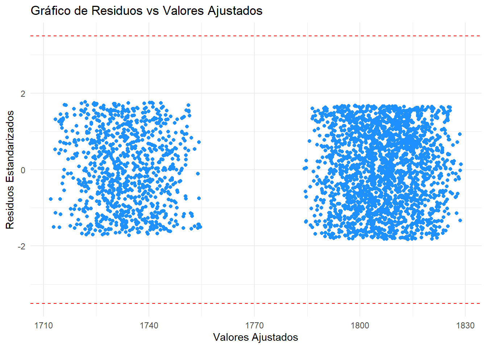
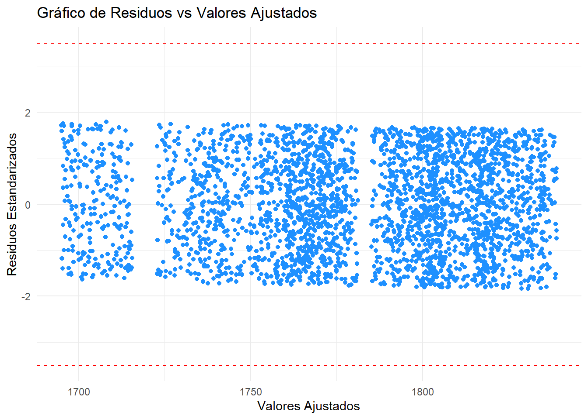

Marca Modelo Procesador RAM Almacenamiento
Dell :400 Length:3000 AMD Ryzen 5:515 8 :725 256 :727
Asus :386 Class :character AMD Ryzen 7:516 16:758 512 :796
HP :377 Mode :character AMD Ryzen 9:494 32:764 1024:739
Acer :374 Intel i5 :502 64:753 2048:738
Lenovo :372 Intel i7 :468
MSI :368 Intel i9 :505
(Other):723
Pantalla TarjetaGrafica SistemaOperativo Peso
13.3:819 AMD Radeon :634 Linux :759 Min. :1.000
14 :721 Intel UHD :572 macOS :757 1st Qu.:1.607
15.6:747 NVIDIA GTX 1650:599 Windows 10:727 Median :2.230
17 :713 NVIDIA RTX 3060:568 Windows 11:757 Mean :2.247
NVIDIA RTX 3070:627 3rd Qu.:2.900
Max. :3.500
Bateria Precio Garantia
Min. : 3.000 Min. : 501.5 1:1103
1st Qu.: 6.100 1st Qu.:1179.3 2: 928
Median : 9.100 Median :1776.0 3: 969
Mean : 9.039 Mean :1780.3
3rd Qu.:12.000 3rd Qu.:2400.4
Max. :15.000 Max. :2999.7
Modelo predictivo de los precios de los computadores portatiles con base en sus diversos componentes

Problematica
La predicción de precios de computadores portátiles debe considerar varios factores clave. Estas máquinas están diseñadas para atender una amplia gama de necesidades, desde trabajo y educación hasta gaming y entretenimiento, lo que se traduce en una diversidad de configuraciones que varían en rendimiento y portabilidad. A medida que la tecnología avanza, es probable que veamos fluctuaciones en los precios, influenciadas por la introducción de nuevos componentes, la demanda del mercado y la competencia entre marcas. La flexibilidad en las opciones de configuración también significa que los consumidores podrán encontrar modelos que se ajusten a su presupuesto, lo que podría estabilizar los precios en el sector de portátiles en el futuro cercano. Por ello, en este trabajo se pretende realizar la predicción del precio de un computador portatil, a partir de ciertos factores de interés.
Planteamiento
A través del análisis de los datos se pretende responder a las siguientes preguntas.
Pregunta Principal
- ¿Las características técnicas de un portátil, como la RAM, almacenamiento, tamaño de la pantalla, peso y duración de la batería, afectan el precio del dispositivo?
Preguntas auxiliares
¿Qué componente tiene el mayor impacto en el precio de los portátiles: RAM, almacenamiento, peso, tamaño de pantalla o duración de la batería?
¿Cuál es la combinación de características técnicas que mejor explica las variaciones en el precio de las laptops?
Objetivo
Objetivo general
Analizar la relación entre las características técnicas de los cumputadores portátiles y su impacto en el precio, mediante un modelo de regresión lineal múltiple.
Objetivos especificos
Identificar cuál de las variables técnicas seleccionadas tiene el mayor impacto en la predicción del precio de una laptop, y evaluar la relación significativa entre la duración de la batería y el precio.
Determinar la combinación de características técnicas que mejor explica las variaciones en el precio de las laptops.
Datos
El conjunto de datos que se analizaran corresponde a 3000 observaciones y 12 variables, de las cuales 4 son cuantitativas y 8 son cualitativas. La Tabla 1 presenta una descripción de la clasificación de las variables.
| Variable | Tipo |
|---|---|
| Marca | Cualitativa |
| Modelo | Cualitativa |
| Procesador | Cualitativa |
| RAM | Cualitativa |
| Almacentamiento | Cualitativa |
| Pantalla | Cualitativa |
| Tarjeta Grafica | Cualitativa |
| Sistema Operativo | Cualitativa |
| Peso | Cuantitativa |
| Bateria | Cuantitativa |
| Precio | Cuantitativa |
| Garantia | Cualitativa |
1. Análisis exploratorio base de datos
Para realizar el analisis de nuestra base de datos primero redefinimos los nombres de las variables.
Al definir el tipo de variable de cada una de las presentes en la base de datos, haremos los cambios necesarios, para que el entorno de R studio no genere errores de lectura y podamos hacer un análisis exploratorio exitoso, por medio de gráficas Boxplot para las variables cualitativas. Para las cuantitativas usaremos gráficos de dispersión que permitan comprender facilmente el comportamiento de estas frente al precio de las computadoras.
Categorización de las variables cualitativas
Observamos que ya nuestras variables cualitativas se encuentran categorizadas, y procedemos a gráficar cada variable respecto al precio para definir sus comportamientos.
Gráficos para las variables cualitativas
Marca ~ Precio
No hay grandes diferencias en la distribución de los precios entre las marcas analizadas. La mayoría de las marcas tienen una mediana de precios similar, entre 1.500 y 2.000, y una distribución comparable, la marca que mas alta tiene su mediana es Asus, y la mas baja es Acer. Esto sugiere que las marcas no se diferencian en cuanto al precio general de sus computadoras.
Procesador ~ Precio
- No hay grandes diferencias en la distribución de los precios comparado con los diferentes procesadores. Cada procesador cuenta con amplia variedad en precios, presentando todos medianas similares, entre $1500 y $2000 indicando que todos se distribuyen de manera similar. Como los precios se distribuyen de manera similar, encontramos que la mediana mas grande es la de la marca Intel I9, y la mas baja la de la marca Intel I5, en todos los casos, esto sugiere que el procesador no es un factor determinante para establecer un precio más bajo o más alto.
RAM ~ Precio
- La memoria RAM tampoco presenta variaciones apreciables para definir a esta como un único factor para determinar el precio de un computador. Presentan igualmente un rango de precio similar, con medianas entre 1.500 y 2.000, siendo la RAM de 16 GB y 64 GB iguales y mas altas que las de 8 GB y 32 GB que tambien son iguales, y mas bajas.
Almacenamiento ~ Precio
- El espacio de almacenamiento tampoco presenta variaciones apreciables para definir a este como un único factor para determinar el precio de un computador. Presentan igualmente unidades entre un rango de precio similar, sus medianas rondan entre 1.500 y 2.000, siendo la mediana de 256 GB de almacenamiento mas alta que las demas, y la de 512 GB mas baja.
Tarjeta gráfica ~ Precio
- La tarjeta gráfica no presenta variaciones apreciables para definir a esta como un único factor para determinar el precio de un computador. Presentan igualmente unidades entre un rango de precio similar, de 1.500 y 2.000, siendo la mediana de Intel UHD mas alta, y Nvidia RTX 3070 mas baja, eso es un indicativo de indicando que es necesario continuar mirando otras variables que puedan explicar de mejor manera el precio.
Sistema operativo ~ Precio
- El sistema operativo no presenta variaciones apreciables para definir a este como un único factor para determinar el precio de un computador. Las medianas siguen estando en un rango de 1.500 y 2.000, la mediana mas alta es la del sistema operativo MacOS, y la mas baja la del Windows 11.
Garantía ~ Precio
- Los años de garantía de un computador no presentan diferencias apreciables, pues los rangos de sus medianas rondan entre 1.500 y 2.000, siendo la mediana de 2 años de garantia mas baja que los otros años que tienen una misma mediana. A la hora de comprar un portatil puede ser este un factor a tener en cuenta de parte del comprador para mayor respaldo en cuanto al dispositivo que elija, pues hay amplia variedad en precios y ya dependerá de otros factores su decisión final. A pesar de ser un factor apreciable para un comprador, no es significativa para la creación de nuestro modelo.
Pantalla ~ Precio
- El rango de precios entre los tamaños de las pantallas tampoco muestra variaciones significativas, la mediana sigue estando en un rango de 1.500 y 2.000, teniendo en este caso como la mediana mas alta la de 17 pulgadas, y las otras medianas iguales. Los precios se distribuyen de manera similar en todos los casos. Esto sugiere que no es un factor determinante para establecer un precio claramente más bajo o más alto.

RAM y Almacenamiento ~ Precio
En el grafico podemos ver que las medianas son muy similares, y todas se encuentran entre 1.500 y 2.000, indicandonos que la pantalla y la RAM no son factores de los que dependa fuertemente el precio.
Pantalla y Garantia ~ Precio
En el grafico podemos ver que las medianas son muy similares, y todas se encuentran entre 1.500 y 2.000, la pantalla y la garantia no parecen ser factores concluyentes en el precio de los pc.
Conclusión general de los gráficos
Tras analizar los boxplots de las ocho variables cualitativas respecto al precio de las computadoras, las medianas de los precios estuvieron constantemente entre los 1500 y 2000 dólares para casi todas las categorías analizadas. Esto significa que, independientemente de la variable, los precios no muestran grandes diferencias, sugiriendo que los computadores dentro de esta muestra tienden a tener precios similares, independientemente de las características específicas.
Además, los rangos en la mayoría de las variables también son similares, lo que indica que la dispersión de los precios es comparable en todas las categorías. Los bigotes también muestran un intervalo de precios similares, lo que confirma la homogeneidad en el comportamiento de los precios entre las diferentes variables.
En resumen, estos resultados sugieren que las variables seleccionadas no tienen una relación fuerte con el precio de los computadores. Por lo tanto, sería necesario reconsiderar elegir otras variables y crear interacciones entre ellas.
2. Análisis de multicolinealidad
Ajuste modelo inicial
Crearemos primero un módelo de regresión lineal con las variables cuantitativas y observaremos luego su resumen de datos junto con el vif y una grafica para verificar que no se presenten problemas de multicolinealidad. Para analizar estas variables cuatitativas crearemos un subset con estas variables y así crear una base de datos aparte solo con estas.
Call:
lm(formula = Precio ~ ., data = var_cuanti)
Residuals:
Min 1Q Median 3Q Max
-1283.44 -600.45 -4.01 619.05 1236.79
Coefficients:
Estimate Std. Error t value Pr(>|t|)
(Intercept) 1817.188 54.534 33.322 <2e-16 ***
Peso -8.714 18.013 -0.484 0.629
Bateria -1.911 3.817 -0.501 0.617
---
Signif. codes: 0 '***' 0.001 '**' 0.01 '*' 0.05 '.' 0.1 ' ' 1
Residual standard error: 720.1 on 2997 degrees of freedom
Multiple R-squared: 0.0001634, Adjusted R-squared: -0.0005039
F-statistic: 0.2448 on 2 and 2997 DF, p-value: 0.7829- Del summary podemos observar que el valor P del peso es 0.629, lo que indica que este coeficiente no es significativo, y la bateria al igual que el anterior, su valor p es 0.617, indicando que este tampoco es significativo. El R cuadrado es 0.0001634, lo que indica que el modelo explica solo un 0.01634% de la variabilidad en el precio. Esto es extremadamente bajo, lo que indica que el modelo no es capaz de predecir la variabilidad en los precios de las laptops basándose en el peso y la duración de la batería.
Peso Bateria
1.0001 1.0001 Dado que nuestros VIF son muy cercanos a 1, podemos tener el indicativo de que no hay problemas de multicolinealidad en el modelo y las variables cualitativas no están correlacionadas entre si, por lo que no es necesario realizar ningún ajuste o eliminar variables debido a este problema.
Análisis gráfico de las variables cuantitativas
Podemos concluir así, que nuestras variables cuantitativas, no tienen correlación con el precio de los computadores. Las correlaciones entre la bateria y el peso son prácticamente nulas, con una correlacion debil y inversa. Esto confirma que no hay problemas de multicolianealidad.
3. Creación de nuevo modelo ajustado
Ajustamos ahora un nuevo modelo sobre el que vamos a trabajar. Para este caso usaremos solo la variable de Garantia para predecir el precio de los computadores. Haremos nuevamente un resumen para analizar su significancia respecto a nuestra variable respuesta y así evaluar el impacto de cada una y que tan bien podrían ajustarse al modelo creado.
Call:
lm(formula = Precio ~ Garantia, data = LLL)
Residuals:
Min 1Q Median 3Q Max
-1298.87 -603.97 4.26 623.71 1257.10
Coefficients:
Estimate Std. Error t value Pr(>|t|)
(Intercept) 1801.366 21.665 83.145 <2e-16 ***
Garantia2 -65.103 32.051 -2.031 0.0423 *
Garantia3 -2.781 31.681 -0.088 0.9300
---
Signif. codes: 0 '***' 0.001 '**' 0.01 '*' 0.05 '.' 0.1 ' ' 1
Residual standard error: 719.5 on 2997 degrees of freedom
Multiple R-squared: 0.001681, Adjusted R-squared: 0.001015
F-statistic: 2.524 on 2 and 2997 DF, p-value: 0.08034Podemos observar que para los 2 años de garantía es significativo con un P = 0.041 menor al nivel de significancia de un 0.05, el modelo presenta un error estándar de 719.5, lo que indica que las predicciones del modelo pueden variar por mucho respecto a los precios reales. También solo el 0.01015% de la variación en el precio se explica por las variables independientes del modelo. Esto indica que el modelo no se ajusta bien a los datos y que podría haber otros factores no considerados que influyan en el precio.
Validacion y análisis de supuestos de la base de datos
Normalidad
Los residuales serán estandarizados para realizar las pruebas de normalidad, y evaluaremos su valor P para determinar si cumple con normalidad.
Shapiro-Wilk normality test
data: modelo1$residuals
W = 0.95669, p-value < 2.2e-16
Anderson-Darling normality test
data: modelo1$residuals
A = 31.604, p-value < 2.2e-16
Jarque Bera Test
data: modelo1$residuals
X-squared = 174.79, df = 2, p-value < 2.2e-16Observemos que nuestros valores P se encuentran por debajo del valor de significancia, por tanto no cumple normalidad. Analizaremos ahora graficamente este supuesto para observar si se encuentra entre la banda de confianza.
[1] 1619 2926El modelo no cumple con el supuesto de normalidad, estadisticamente su p- value es menor al nivel de significancia, y graficamente los datos observados no estan contenidos dentro de la region cercana a la pendiente
Homocedasticidad
studentized Breusch-Pagan test
data: modelo1
BP = 1.8811, df = 2, p-value = 0.3904El modelo Si cumple con el supuesto de homocedasticidad, su p-value es mayor al nivel de significancia. Por tanto nuestro modelo es homocedastico. Observemos ahora con el gráfico, si identificamos algún patrón que pueda explicar la heterocedasticidad.
Independencia
Breusch-Godfrey test for serial correlation of order up to 1
data: modelo1
LM test = 2.3656, df = 1, p-value = 0.124
Durbin-Watson test
data: modelo1
DW = 1.9432, p-value = 0.05967
alternative hypothesis: true autocorrelation is greater than 0El modelo cumple con el supuesto de independencia, estadisticamente sus dos pruebas son mayores al nivel de significancia, aunque, en el test de Durbin-Watson el p-value es un valor muy cercano al de significancia, siendo un poco preocupante e importante analizar para errores futuros. Para eso haremos una grafica.
De la grafica podemos ver que los datos estan dispersos y no siguen algún patron, esto nos confirma que se cumple el supuesto de independencia.
Puntos de influencia y outliers para modelo ajustado
Como en el modelo anterior no era valido, ya que no cumplia todos los supuestos analizaremos los puntos de influencia, para comprobar si de este modo se puede mejorar el modelo y conseguir que cumpla los supuestos para poder realizar la seleccion de variables y el training, test.
Analizamos ahora con la distancia cook los puntos influyentes que puedan estar afectando nuestro modelo, y posteriormente, eliminaremos estos puntos para observar su impacto en el modelo.
named integer(0)Para este modelo no hemos encontrado puntos de influencia que podrían estar afectando la significancia del modelo. Más adelante observaremos otros modelos en los que analizaremos sus puntos de influencia. Como en este caso no eliminamos puntos de influencia, directamente podemos decir que el modelo no se puede ajustar de tal modo que sea valido en su totalidad, se puede ajustar con otros metodos, pero no con los vistos en clase.
4. Selección de variables para el modelo
Aún no logramos llegar a un modelo que logre explicar el precio de las computadores según sus especificaciones técnicas. Por tal razón, usaremos ahora el método STEP, con el cual realizaremos la selección de variables y así, evaluaremos varios modelos de forma iterativa.
Aqui terminamos, ya que para poder seguir con el training y test debemos tener un modelo valido, ya que ahi encontraremos el mejor modelo para poder hacer predicciones de la variable respuesta con respecto a mis otras variables
Start: AIC=39474.63
Precio ~ Garantia
Df Sum of Sq RSS AIC
<none> 1551639502 39475
- Garantia 2 2613111 1554252613 39476
Call:
lm(formula = Precio ~ Garantia, data = LLL)
Coefficients:
(Intercept) Garantia2 Garantia3
1801.366 -65.103 -2.781
Call:
lm(formula = Precio ~ Garantia, data = LLL)
Residuals:
Min 1Q Median 3Q Max
-1298.87 -603.97 4.26 623.71 1257.10
Coefficients:
Estimate Std. Error t value Pr(>|t|)
(Intercept) 1801.366 21.665 83.145 <2e-16 ***
Garantia2 -65.103 32.051 -2.031 0.0423 *
Garantia3 -2.781 31.681 -0.088 0.9300
---
Signif. codes: 0 '***' 0.001 '**' 0.01 '*' 0.05 '.' 0.1 ' ' 1
Residual standard error: 719.5 on 2997 degrees of freedom
Multiple R-squared: 0.001681, Adjusted R-squared: 0.001015
F-statistic: 2.524 on 2 and 2997 DF, p-value: 0.08034Start: AIC=39474.63
Precio ~ Garantia
Df Sum of Sq RSS AIC
<none> 1551639502 39475
- Garantia 2 2613111 1554252613 39476
Call:
lm(formula = Precio ~ Garantia, data = LLL)
Coefficients:
(Intercept) Garantia2 Garantia3
1801.366 -65.103 -2.781 5. Análisis de otros modelos
Aún no logramos llegar a un modelo que logre explicar el precio de las computadoras
Modelo 2
En este caso analizaremos modelo que incluye como variables regresoras: Bateria, Peso y Garantia
Validacion del modelo 2
Comprobemos los supuestos de este modelo 2
Normalidad modelo 2
Shapiro-Wilk normality test
data: modelo2$residuals
W = 0.95677, p-value < 2.2e-16
Anderson-Darling normality test
data: modelo2$residuals
A = 31.506, p-value < 2.2e-16
Jarque Bera Test
data: modelo2$residuals
X-squared = 174.53, df = 2, p-value < 2.2e-16
[1] 2926 860No es normal, podemos ver esto en ambas pruebas, tanto estadisticas como graficas.
Homocedasticidad modelo 2
studentized Breusch-Pagan test
data: modelo2
BP = 7.1586, df = 4, p-value = 0.1277No es homocedastico, en la prueba estadistica aparentemente parece que si, pero a la hora de hacer el grafico podemos ver que los datos no estan dispersos aleatoriamente, y por esto no cumple este supuesto.
Independencia modelo 2
Breusch-Godfrey test for serial correlation of order up to 1
data: modelo2
LM test = 2.2876, df = 1, p-value = 0.1304
Durbin-Watson test
data: modelo2
DW = 1.9441, p-value = 0.06282
alternative hypothesis: true autocorrelation is greater than 0Si es independiente, en la prueba estadistica y grafica podemos ver que los datos si estan dispersos aleatoriamente, y por esto cumple este supuesto.
Modelo 2 sin puntos de influencia
Despues analizaremos los outliers para ver si eliminandolos el modelo va a cumplir los supuestos de normalidad, homocedasticidad e independencia.
106 192 549 1026 1109 1130 1171 1222 1380 1464 1631 1827 2141 2541 2632 2652
106 192 549 1026 1109 1130 1171 1222 1380 1464 1631 1827 2141 2541 2632 2652
2946
2946 Volvamos a verificar si el modelo ya es valido
Call:
lm(formula = Precio ~ Bateria + Peso + Garantia, data = LLL2)
Residuals:
Min 1Q Median 3Q Max
-1306.72 -596.56 5.59 619.52 1265.52
Coefficients:
Estimate Std. Error t value Pr(>|t|)
(Intercept) 1842.945 56.905 32.386 <2e-16 ***
Bateria -1.536 3.819 -0.402 0.688
Peso -10.446 18.029 -0.579 0.562
Garantia2 -71.642 31.958 -2.242 0.025 *
Garantia3 1.839 31.628 0.058 0.954
---
Signif. codes: 0 '***' 0.001 '**' 0.01 '*' 0.05 '.' 0.1 ' ' 1
Residual standard error: 715.8 on 2978 degrees of freedom
Multiple R-squared: 0.00239, Adjusted R-squared: 0.00105
F-statistic: 1.784 on 4 and 2978 DF, p-value: 0.1292Validacion del modelo 2 sin puntos de influencia
Normalidad modelo 2 sin puntos de influencia
Sigue sin cumplir normalidad.
Shapiro-Wilk normality test
data: modelo22$residuals
W = 0.95739, p-value < 2.2e-16
Anderson-Darling normality test
data: modelo22$residuals
A = 31.016, p-value < 2.2e-16
Jarque Bera Test
data: modelo22$residuals
X-squared = 172.58, df = 2, p-value < 2.2e-16[1] 2910 857Homocedasticidad modelo 2 sin puntos de influencia
Sigue sin cumplir homocedasticidad.
studentized Breusch-Pagan test
data: modelo22
BP = 5.5242, df = 4, p-value = 0.2376
Independencia modelo 2 sin puntos de influencia
Sigue cumpliendo independencia.
Breusch-Godfrey test for serial correlation of order up to 1
data: modelo22
LM test = 1.8124, df = 1, p-value = 0.1782
Durbin-Watson test
data: modelo22
DW = 1.95, p-value = 0.08599
alternative hypothesis: true autocorrelation is greater than 0Modelo 3
En este otro caso analizaremos este modelo que incluye como variables regresoras: Almacenamiento, Peso y Garantia.
Call:
lm(formula = Precio ~ Almacenamiento + Peso + Garantia, data = LLL)
Residuals:
Min 1Q Median 3Q Max
-1321.86 -607.66 -0.72 623.81 1285.29
Coefficients:
Estimate Std. Error t value Pr(>|t|)
(Intercept) 1847.441 52.083 35.471 <2e-16 ***
Almacenamiento512 -58.010 36.943 -1.570 0.116
Almacenamiento1024 -29.964 37.607 -0.797 0.426
Almacenamiento2048 -17.530 37.664 -0.465 0.642
Peso -8.312 18.046 -0.461 0.645
Garantia2 -65.562 32.075 -2.044 0.041 *
Garantia3 -3.299 31.694 -0.104 0.917
---
Signif. codes: 0 '***' 0.001 '**' 0.01 '*' 0.05 '.' 0.1 ' ' 1
Residual standard error: 719.7 on 2993 degrees of freedom
Multiple R-squared: 0.002623, Adjusted R-squared: 0.0006232
F-statistic: 1.312 on 6 and 2993 DF, p-value: 0.2482Validacion del modelo 3
Comprobemos los supuestos de este modelo 3.
Normalidad modelo 3
El modelo 3 no cumple normalidad, la prueba grafica y las estadisticas nos lo demuestran.
Shapiro-Wilk normality test
data: modelo3$residuals
W = 0.95718, p-value < 2.2e-16
Anderson-Darling normality test
data: modelo3$residuals
A = 31.512, p-value < 2.2e-16
Jarque Bera Test
data: modelo3$residuals
X-squared = 174.49, df = 2, p-value < 2.2e-16[1] 2926 1165Homocedasticidad modelo 3
No es homocedastico, en la prueba estadistica dice que si, pero a la hora de hacer el grafico podemos ver que los datos no estan dispersos aleatoriamente, y por esto no cumple este supuesto.
studentized Breusch-Pagan test
data: modelo3
BP = 16.134, df = 6, p-value = 0.01306
Independencia modelo 3
Cumple independencia, las preubas graficas y estadisticas nos lo demuestran.
Breusch-Godfrey test for serial correlation of order up to 1
data: modelo3
LM test = 2.4223, df = 1, p-value = 0.1196
Durbin-Watson test
data: modelo3
DW = 1.9426, p-value = 0.05776
alternative hypothesis: true autocorrelation is greater than 0Modelo 3 sin puntos de influencia
Despues analizaremos los outliers para ver si eliminandolos el modelo va a cumplir los supuestos de normalidad, homocedasticidad e independencia.
1925 2482
1925 2482 Volvamos a verificar si el modelo ya es valido.
Call:
lm(formula = Precio ~ Bateria + Peso + Garantia, data = LLL3)
Residuals:
Min 1Q Median 3Q Max
-1304.18 -603.85 3.24 627.80 1258.41
Coefficients:
Estimate Std. Error t value Pr(>|t|)
(Intercept) 1831.100 56.904 32.179 <2e-16 ***
Bateria -1.887 3.813 -0.495 0.6208
Peso -5.722 18.015 -0.318 0.7508
Garantia2 -66.061 32.056 -2.061 0.0394 *
Garantia3 -1.274 31.680 -0.040 0.9679
---
Signif. codes: 0 '***' 0.001 '**' 0.01 '*' 0.05 '.' 0.1 ' ' 1
Residual standard error: 719.2 on 2993 degrees of freedom
Multiple R-squared: 0.001903, Adjusted R-squared: 0.0005694
F-statistic: 1.427 on 4 and 2993 DF, p-value: 0.2224Validacion del modelo 3 sin puntos de influencia
Normalidad modelo 3 sin puntos de influencia
Sigue sin cumplir normalidad.
Shapiro-Wilk normality test
data: modelo33$residuals
W = 0.95678, p-value < 2.2e-16
Anderson-Darling normality test
data: modelo33$residuals
A = 31.484, p-value < 2.2e-16
Jarque Bera Test
data: modelo33$residuals
X-squared = 174.41, df = 2, p-value < 2.2e-16[1] 2924 1619Homocedasticidad modelo 3 sin puntos de influencia
Sigue sin cumplir homocedasticidad.
studentized Breusch-Pagan test
data: modelo33
BP = 7.2093, df = 4, p-value = 0.1252Independencia modelo 3 sin puntos de influencia
Sigue siendo independiente.
Breusch-Godfrey test for serial correlation of order up to 1
data: modelo33
LM test = 2.1381, df = 1, p-value = 0.1437
Durbin-Watson test
data: modelo33
DW = 1.9459, p-value = 0.06924
alternative hypothesis: true autocorrelation is greater than 0¿Los modelos cumplen los supuestos y son validos?
Como observamos en los dos modelo planteados anteriormente, estos no cumplen los supuestos, y a la hora de eliminar sus puntos de influencia, estos solo mejoraban un poco son valores, pero era una mejora casi insignifiacnte, es por ello que no podemos seguir avanzando a los otros pasos de un modelo de regresion lineal multiple, para poder avanzar tendriamos que encontrar un modelo valido, cosa que no pudimos hacer aqui.
Pudimos observar que, al eliminar los puntos de influencia en los dos modelos, la influencia no era significativa para explicar porqué nuestras variables no logran explicar aún el precio de las computadoras.
¿Pruebas train y test?
No podemos proceder con la prueba de train y test, ya que ninguno de los modelos planteados es valido, por esta razon tampoco amerita realizar la seleccion de variables, ya que no vamos a llegar a un buen modelo que prediga nuestros precios de laptops.
Conclusion
No hay modelo que nos conduzca a una buena predicción del precio de laptops, no encontramos un buen modelo debido a la ausencia de una buena relación entre algunas de las 11 variables cualitativas y cuantitativas que tenemos, con lo que hemos visto en el curso no fue suficiente para ajustar el modelo y lograr que mejore, el modelo se puede mejorar mediante metodos no vistos en clase. Se puede concluir que las variables no afectan el precio del computador, el mejor modelo tiene un x% de capacidad predictora…
(Entre los modelos analizados busque cuales son los que mejor predicen el modelo, y cual variable, puede que la variable no funcione, pero lo del modelo si, el que tenga los valores mas altos.
Para colocarlo en la conclusion.)
Referencias
(Schloerke et al. 2024; Wickham 2016; Fox y Weisberg 2019; Fox, Weisberg, y Price 2022; Zeileis y Hothorn 2002; Trapletti y Hornik 2024; Gross y Ligges 2015)
Referencias
Fox, John, y Sanford Weisberg. 2019. «An R Companion to Applied Regression». https://www.john-fox.ca/Companion/.
Fox, John, Sanford Weisberg, y Brad Price. 2022. «carData: Companion to Applied Regression Data Sets». https://CRAN.R-project.org/package=carData.
Gross, Juergen, y Uwe Ligges. 2015. «nortest: Tests for Normality». https://CRAN.R-project.org/package=nortest.
Schloerke, Barret, Di Cook, Joseph Larmarange, Francois Briatte, Moritz Marbach, Edwin Thoen, Amos Elberg, y Jason Crowley. 2024. «GGally: Extension to ’ggplot2’». https://CRAN.R-project.org/package=GGally.
Trapletti, Adrian, y Kurt Hornik. 2024. «tseries: Time Series Analysis and Computational Finance». https://CRAN.R-project.org/package=tseries.
Wickham, Hadley. 2016. «ggplot2: Elegant Graphics for Data Analysis». https://ggplot2.tidyverse.org.
Zeileis, Achim, y Torsten Hothorn. 2002. «Diagnostic Checking in Regression Relationships» 2. https://CRAN.R-project.org/doc/Rnews/.